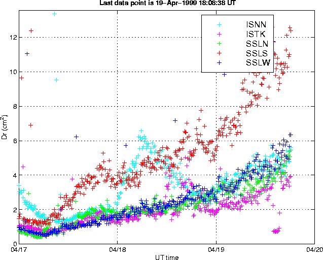

Reduced displacement rose for about 60 hours prior to the first eruption on April 19th, 1999. This increase was linear until the beginning of April 19th, but then a sharp increase in the gradient occured. Between 0000 UT and 1800 UT on 19th April, reduced displacement doubled on ALL stations.
.
Glenn Thompson, 3 May 1999.